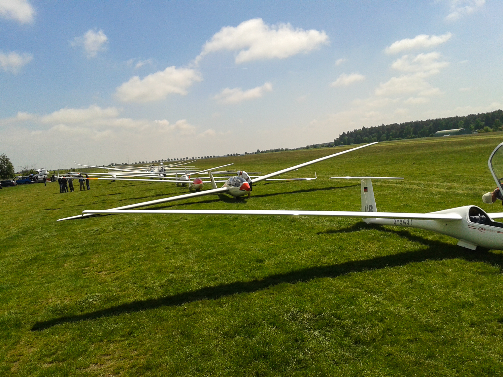

Als Teil des D-Kaders fuhren Noah und ich Mitte Mai für ein paar Tage nach Rudolstadt in Thüringen zum Trainingslager. Für mich persönlich ging die Vorbereitung schon ein paar Tage eher los, da ich über Himmelfahrt ebenso am Flugplatz war, um Strecke zu fliegen und Flugschüler zu schulen. Nach drei erfolgreichen Flugtagen am Heimatflugplatz Reinsdorf rüsteten wir Samstagabend den Duo-Discus ab und packten kurzerhand alles zusammen, um aufzubrechen. Nachdem wir noch kurz vor Ladenschluss auf dem Weg genug eingekauft hatten, zumindest für die nächsten Tage, wurde das Gelände schon etwas hügeliger und wir freuten uns auf das Fliegen in den Mittelgebirgen. In Rudolstadt angekommen, wurden wir mit Kuchen empfangen und bauten die Zelte auf, um am nächsten Tag fliegen zu können. Wir flogen insgesamt drei Tage.
Am ersten Tag flogen wir mit den neueren Kadermitgliedern im Team, um gemeinsam die Gegend zu erkunden, denn für viele war das Fliegen im Mittelgebirge etwas ganz Neues. Abends wurde nach gemeinsamem Kochen der Tag ausgewertet und Erfahrungen geteilt, sowie einzelne Situationen in den Flügen besprochen.

Der zweite Tag war eigentlich der spannendste, denn Noah und ich hatten große Pläne. Wir wollten nach Österreich fliegen. Das Wetter war bereits absehbar für den Rückweg schwierig, aber eventuell machbar. Nach ein bisschen Frustration über die örtlichen Wassertankstellen, starteten wir mit dem ersten F-Schlepp ins gut entwickelte Wetter. Wir flogen entlang der Mittelgebirge nach Süden. Über das Fichtelgebirge, den Oberpfälzer Wald, bis hin zum Bayrischen Wald. Der Hinweg lief gut, wir kamen bis nach Österreich gut voran und konnten von Linz aus die Alpen sehen. Über 300km entfernt vom Startort wendeten wir also. Der Blick ins Satellitenbild verriet uns, dass der Rückweg schwierig, aber machbar werden könnte. Zum Schluss landeten wir, nicht weit entfernt von Rudolstadt, nach langem Kämpfen bei schwacher Thermik außen. Aber Tamino hatte unseren Anhänger bereits angehangen und fuhr los. Insgesamt mit über 700km dennoch ein super cooler und vor allem erlebnisreicher Flug!
Am letzten Tag flogen wir eine kleine Wettbewerbsaufgabe. Das Wetterfenster war mit einigen Regenschauern klein und nicht immer leicht. Auch dieses Mal endete der Flug nicht am Flugplatz, sondern auf einer frisch gemähten Wiese. Immerhin war der Rückweg zum Flugplatz nicht so weit. Wie wir später erfuhren, wusste bereits 10min später das ganze Dorf Bescheid, was einiges an Publikum brachte.
Aufgrund schlechten Wetters reisten wir Mittwoch früh ab. Nun blicken wir auf ein lehrreiches Trainingslager mit einigen schönen Erinnerungen zurück und freuen uns, die erlangen Erfahrungen in der weiteren Saison anzuwenden.